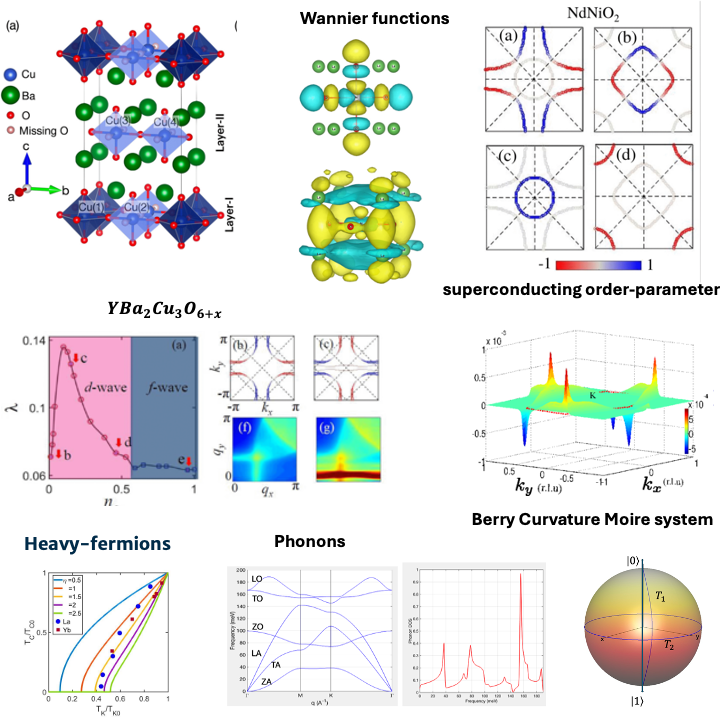

Postdoctoral Researcher at the Elmore Family School of Electrical and Computer Engineering, Purdue University.
Previously: Postdoctoral Fellow at IIT Madras; Ph.D. from IISc Bangalore.
I am a theoretical condensed matter physicist. My work integrates ab-initio (DFT/DFPT) and many-body methods to investigate spin-phonon physics, quantum defects (specifically VB- in h-BN), and unconventional superconductivity in correlated materials like cuprates and infinite-layer nickelates.
Email / Google Scholar / LinkedIn / GitHub

Investigating the broadband relaxation dynamics of Boron-Vacancy centers in hexagonal Boron Nitride. I use ab-initio spin-phonon relaxation theory to compute coupling coefficients and phonon-limited relaxation times.
Predicting gap symmetries (e.g., d-wave, f-wave) in cuprates and nickelates. My recent work explores unique dxy-wave superconductivity in Ba2CuO3.25 and orbital-selective pairing mechanisms.